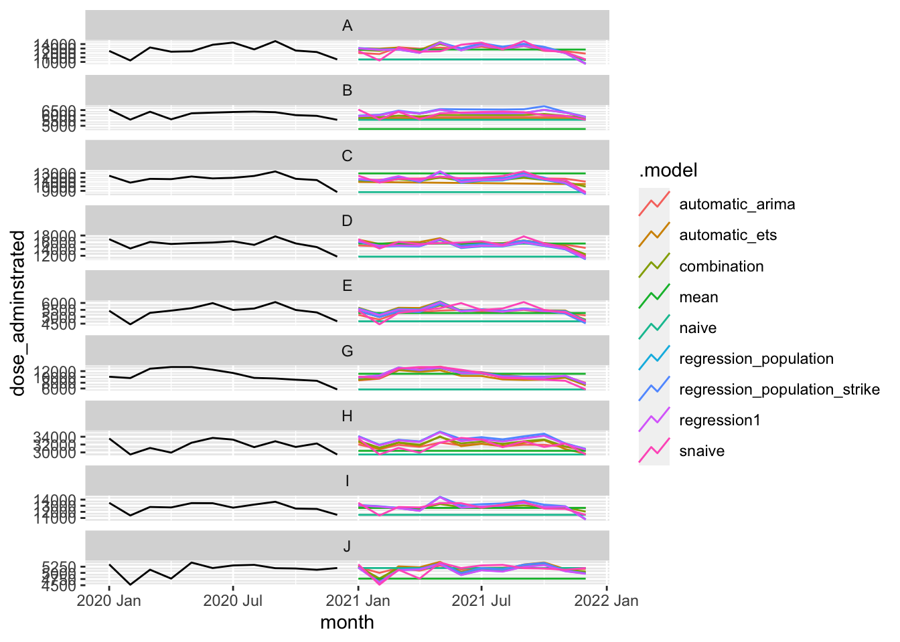
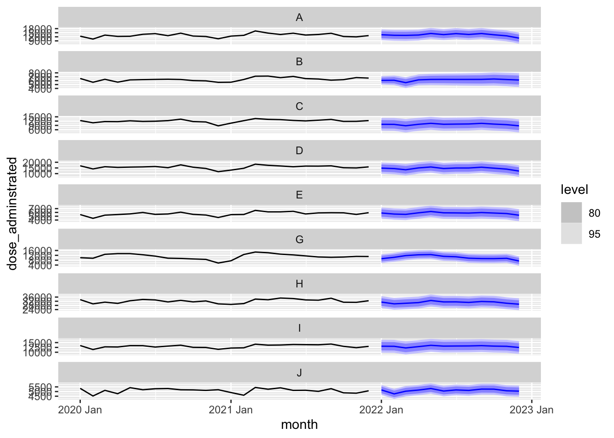
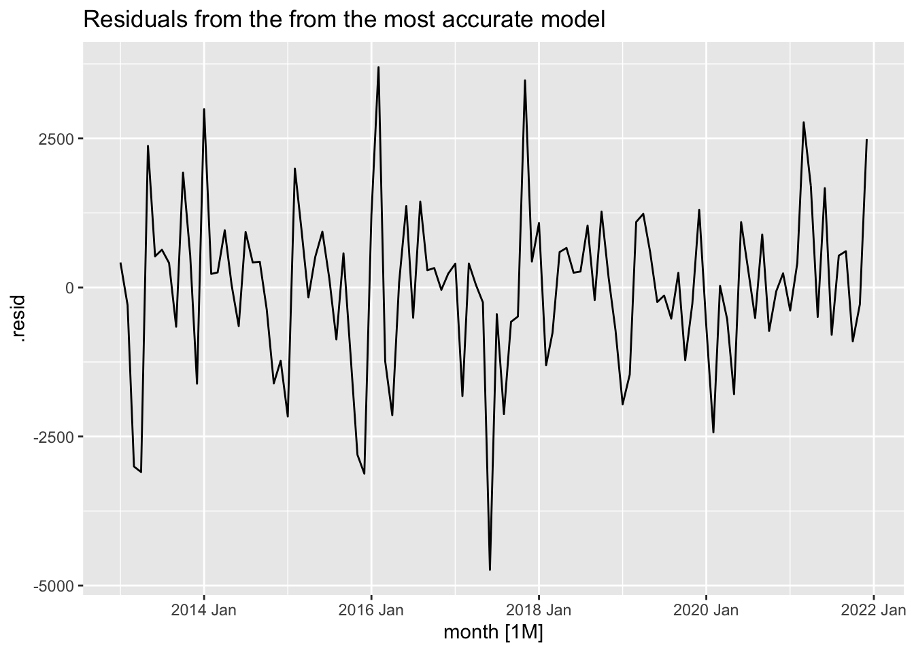
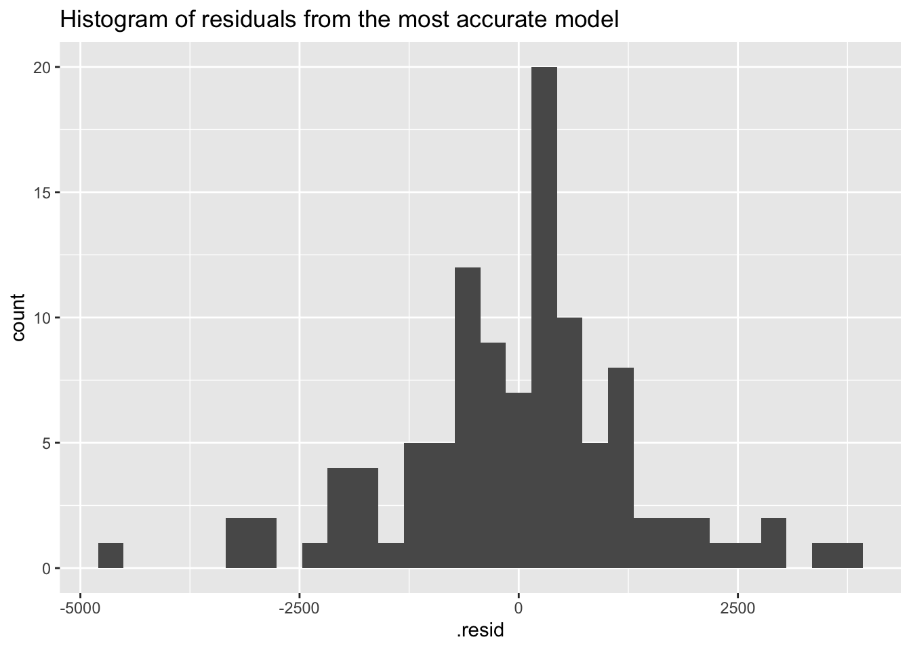
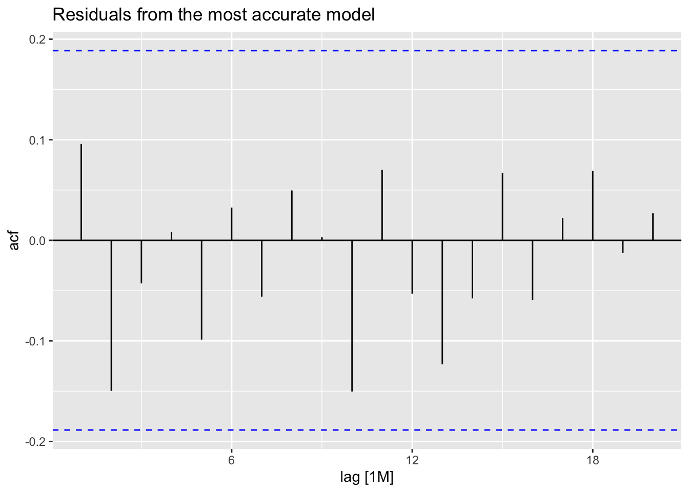

── Conflicts ────────────────────────────────────────── tidyverse_conflicts() ──
✖ dplyr::filter() masks stats::filter()
✖ lubridate::interval() masks tsibble::interval()
✖ dplyr::lag() masks stats::lag()
ℹ Use the conflicted package (<http://conflicted.r-lib.org/>) to force all conflicts to become errors
We tart by splitting data into two sets to describe the modeling process. We leave out 12 periods (equal to forecast horizon) as test set, and we pretend this is the future we want to forecast.
Warning: There was 1 warning in `filter()`.
ℹ In argument: `time_in(month, ...)`.
Caused by warning:
! `yearmonth()` may yield unexpected results.
ℹ Please use arg `format` to supply formats.

Compute forecast accuracy
Let’s compare the forecast accuracy of all models. Complete the R code to compute the point forecast accuracy, prediction interval accuracy and probabilistic distribution accuracy measures:
split data using filter_index() or other functions
create different time series origins
model each origin,
forecast each origin
let’s see how we do it in R:
split data
We initially split the data into test and train. We defined a new variable, percentage_test. This will determine the percentage of the time series we use to evaluate the forecast accuracy using TSCV. As a general rule, we use 20%-30% of the length of time series as the test set. For instance, if we have 120 months of data, and use 20% as test set, that means we will have 24 months (120*0.2) in the test set:
forecast_horizon <-12# forecast horizonpercentage_test <-0.2#20% of time series for test settest <- vaccine_administrated_tsb |>filter_index(as.character(max(vaccine_administrated_tsb$month)-round(percentage_test*length(unique(vaccine_administrated_tsb$month)))+1) ~ .)train <- vaccine_administrated_tsb |>filter_index(. ~as.character(max(vaccine_administrated_tsb$month)-(round(percentage_test*length(unique(vaccine_administrated_tsb$month))))))
Time series cross validation
Before fitting the models, we need to create the time series origins in both train and test sets. We first apply time series cross validation on the train data. We start with an initial training, the length of the first origin (.init = ) and then increase the length of the previous origin by adding new observation (.step=), we continue creating these timeseries until the number of observation left at the end of timeseries equals to the forecast horizon, we stop there.
Next, we apply time series cross validation on the test data. We create slides in the test set that corresponds to each origin created using train data, equal to the length of the forecast horizon.
train_tscv <- vaccine_administrated_tsb |>filter_index(. ~as.character(max(vaccine_administrated_tsb$month)-(forecast_horizon))) |>stretch_tsibble(.init =length(unique(train$month)), .step =1) # split data into different time series (i.e. origin or id) with increasing size# you need also to get future values that correspond to each .id, because you need them in the forecast model:test_tscv <- test |>slide_tsibble(.size = forecast_horizon, .step =1, .id =".id") |>select(-dose_adminstrated)
.init is the size of first origin, .step is the increment step, this can correspond to the forecasting frequency, i.e. how often you generate the forecast. If .step = 1 in a monthly time series, it means we generate forecasts very month for the given forecast horizon.
Values of population and strike in the test set
It is important to replace population_under1 values in the test_tscv with its estimation, otherwise we use perfect forecast for the population_under1 in the models using those predictors which can mislead us in choosing the most accurate model.
We don’t have access to these forecast, so here we forecast them using ETS. Complete the R code to produce the estimation of population_under1 abd replace it with actual values in test_tscv:
# A fable: 10,692 x 8 [1M]
# Key: .id, region, .model [891]
.id region .model month dose_adminstrated .mean population_under1
<int> <chr> <chr> <mth> <dist> <dbl> <dbl>
1 1 A mean 2020 Mar N(12767, 3628753) 12767. 169023.
2 1 A mean 2020 Apr N(12767, 3628753) 12767. 169023.
3 1 A mean 2020 May N(12767, 3628753) 12767. 169023.
4 1 A mean 2020 Jun N(12767, 3628753) 12767. 169023.
5 1 A mean 2020 Jul N(12767, 3628753) 12767. 169023.
6 1 A mean 2020 Aug N(12767, 3628753) 12767. 169023.
7 1 A mean 2020 Sep N(12767, 3628753) 12767. 169023.
8 1 A mean 2020 Oct N(12767, 3628753) 12767. 169023.
9 1 A mean 2020 Nov N(12767, 3628753) 12767. 169023.
10 1 A mean 2020 Dec N(12767, 3628753) 12767. 169023.
# ℹ 10,682 more rows
# ℹ 1 more variable: strike <fct>
Observe the fcst_tscv object.
What type of data structure is it? How many rows and columns are present, and what do they represent?
forecast accuracy
Let’s compare the forecast accuracy of all models. Complete the R code to compute the point forecast accuracy, prediction interval accuracy and probabilistic distribution accuracy measures:
This will provide an overall summary (i.e an average) of multiple accuracy measures across all origins and forecast horizon. The result is summarised automatically across all origins (.id) and horizon using a simple average.
Which method is the best method (i.e. lowest error metric)?
accuracy per id
Now let’s see how we can get the accuracy measure for each origin (i.e. .id) separately instead of averaging across all of them. To do this, you need to use an additional argument in accuracy(by=):
fc_accuracy_by_id <- fcst_tscv |>accuracy(vaccine_administrated_tsb, by =c(".model", ".id","region"))
We can now create some insightful visualisations. Complete the following code to generate a density plot and a box plot that highlights the distribution of the error metrics. You can choose any error metric:
# Density plotfc_accuracy_by_id |>select(.id,.model,MASE) |>ggplot(aes(MASE))+geom_density(aes(fill=factor(.model)), alpha=.5)
What if you want to show the accuracy measure for each model and each horizon (h=1, 2,…,12)?
In fable we don’t get automatically a column that corresponds to forecast horizon (h=1,2,3,…, 12). If this is something you are interested in, you can do it yourself, let’s first observe the first 24 observations to see the difference later:
fcst_tscv[1:24,]
# A fable: 24 x 8 [1M]
# Key: .id, region, .model [2]
.id region .model month dose_adminstrated .mean population_under1
<int> <chr> <chr> <mth> <dist> <dbl> <dbl>
1 1 A mean 2020 Mar N(12767, 3628753) 12767. 169023.
2 1 A mean 2020 Apr N(12767, 3628753) 12767. 169023.
3 1 A mean 2020 May N(12767, 3628753) 12767. 169023.
4 1 A mean 2020 Jun N(12767, 3628753) 12767. 169023.
5 1 A mean 2020 Jul N(12767, 3628753) 12767. 169023.
6 1 A mean 2020 Aug N(12767, 3628753) 12767. 169023.
7 1 A mean 2020 Sep N(12767, 3628753) 12767. 169023.
8 1 A mean 2020 Oct N(12767, 3628753) 12767. 169023.
9 1 A mean 2020 Nov N(12767, 3628753) 12767. 169023.
10 1 A mean 2020 Dec N(12767, 3628753) 12767. 169023.
# ℹ 14 more rows
# ℹ 1 more variable: strike <fct>
#View(fcst_tscv[1:24,])
We first need to group by id and .model and then create a new variable called h and assign row_number() to it (you can type ?row_number in your Console to see what this function does, it simply returns the number of row):
fc_h <- fcst_tscv |>group_by(.id,.model, region) |>mutate(h=row_number()) |>ungroup()#View(fc_h[1:24,])# view the first 24 rows of ae_fc and observe h
Now check rows from 12 to 24 to see the difference.
To calculate the accuracy measures for each horizon and model, complete the following code :
You can now create a line chart to show how forecast accuracy may change over the forecast horizon. Please complete the R code for a metric of your preference. You can replicate this process by changing the chosen metric:
ggplot(data = fc_accuracy_h, mapping =aes(x = h, y = MASE, color = .model))+geom_point()+geom_line()+facet_wrap(vars(region), scales="free_y")+ ggthemes::scale_color_colorblind()+scale_x_continuous(breaks =1:12)+ggthemes::theme_clean()+labs(x="Month",y="Acuracy")
Warning: This manual palette can handle a maximum of 8 values. You have
supplied 9.
Forecast using best model for the future and visualise it
Now, we need to generate forecast for the future of the time series using the best model identified above. In order to do that, we need to get the values of predictors in the future corresponding to the forecast horizon, we first need to use new_data() followed by some data manipulation to get the new data required for forecasting:
You first need to produce the future months. Complete the following code todo that:
fcst_future |>autoplot(filter_index(vaccine_administrated_tsb, "2020"~ .))# visualise it
Warning: There was 1 warning in `filter()`.
ℹ In argument: `time_in(month, ...)`.
Caused by warning:
! `yearmonth()` may yield unexpected results.
ℹ Please use arg `format` to supply formats.

Residual diagnostics
Now, let’s perform the residual diagnostic for the most accurate forecasts identified above though time series cross validation.
Plot the residuals:
fit_future |>augment() |>filter(region =="A") |>autoplot(.resid) +labs(title ="Residuals from the from the most accurate model")

Create the histogram of residuals:
fit_future |>augment() |>filter(region =="A") |>ggplot(aes(x = .resid)) +geom_histogram() +labs(title ="Histogram of residuals from the most accurate model")
`stat_bin()` using `bins = 30`. Pick better value with `binwidth`.

Create the ACF plot of residuals:
fit_future |>augment() |>filter(region =="A") |>ACF(.resid) |>autoplot() +labs(title ="Residuals from the most accurate model")

Instead, you could use a function that provides all three plots together: